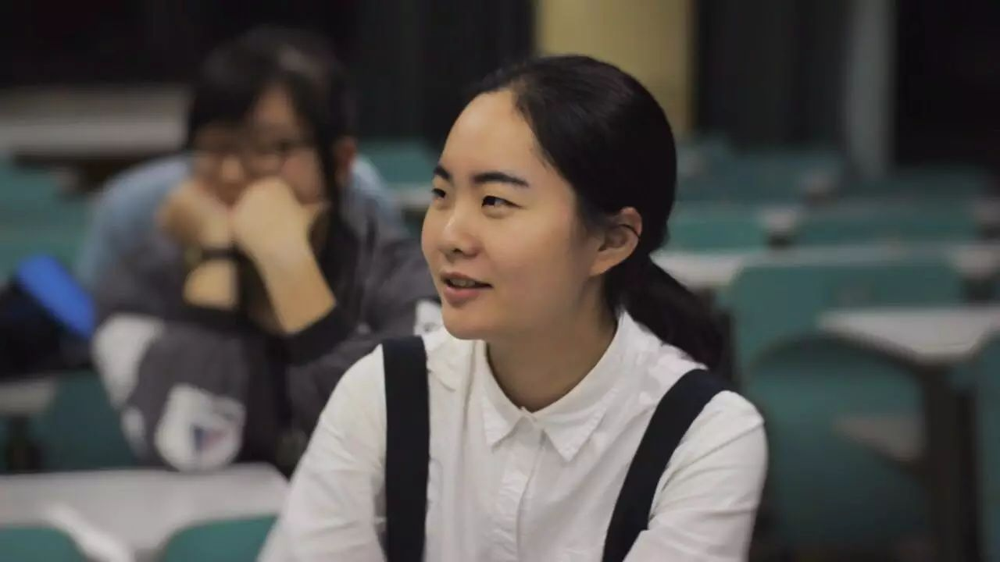
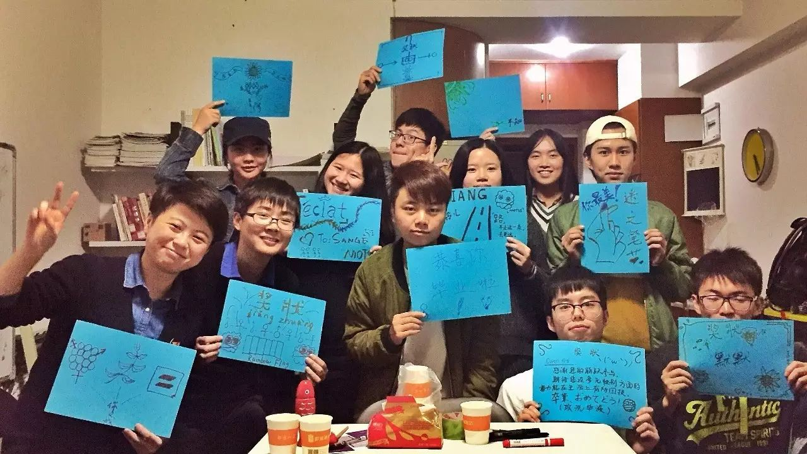
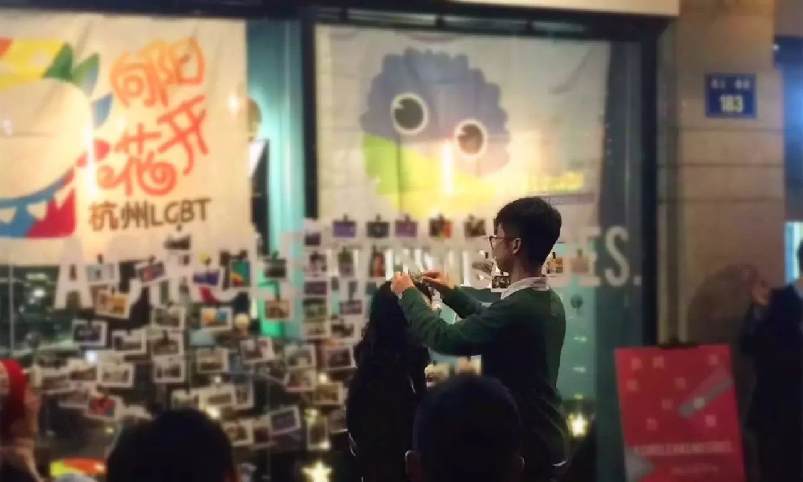

新年致辞 | 2017，酷儿奇妙物语
新年好，各位，我是酷儿论坛的新任站长青雀，感谢大家陪酷儿又走过了2016这一年。

· 新任站长青雀
这一年，我们举办了多次讲座、交流会，参加了伴艾骑行和彩虹马拉松；这一年，我们重编新生同志指南，被广泛转发阅读受到大家的好评；这一年，我们走在更前线，在浙大校园内“大搞特稿”紫色校园日活动；这一年，我们关注更多更多的性/别议题，举办了两次性/别工作坊和《阴道说》剧本朗读会。（点击蓝字可查看相关活动的内容）

· 性/别工作坊
这一年，我们迎来了杭州同志中心“新”的开始——杭州同志中心搬家了，我们一起布置规整新中心，在那里一起酷儿一起喜怒哀乐。幸福在哪里，中心陪着你。
· 中心美丽的彩虹窗帘
而这一年，也让我从普通志愿者，进而成为心理组组长，最后在年末的选举中，成为酷儿论坛新一任的站长。这是我2015年11月加入酷儿论坛的时，未想到的。而我那时小小的，希望做出一点努力和奉献的愿景，也在这一年里慢慢慢慢扩大，变成了我在2016年LGBT大会和杭州同志中心新年趴上允诺的，要努力陪中国同运走十年。

· 2016-2017新年趴站长交接
庆祝这一年，台湾初审通过同性婚姻法律。
一位朋友跟我感慨说，想想真是奇妙，就在我们的对岸，从明星到民众，大家的努力一点点原来真的能被实现。感谢这种奇妙。这种奇妙在我们努力跟旁人科普并向他们出柜的时候我见过，在我们举办的讲座、工作坊的参与者脸上我见过，在越来越多的志愿者加入我们的那些瞬间我见过……
所以呀，不要因为胆怯和过分的顾虑，而错过身边许许多多奇妙的事。也要相信啊，你的付出和努力并不是琐碎无用的，它们串联起来真的可能会实现很多事。

· 青雀与Owen
也感谢给我们带来奇妙的每一个人，谢谢你们的努力，谢谢你们的付出，谢谢你们2016年一整年份的温暖。
酷儿论坛的第十五年与2017，感谢继续相伴。
这一年，我们希望走进更多的高校，希望见到更多的你们，希望更多元、更健康、更平等。希望这一年，我们继续站在一起为自己发声，为这个群体发声，并帮助身边更多的人。
也欢迎你加入我们，和我们一起为建立多元、健康、平等的环境而努力。